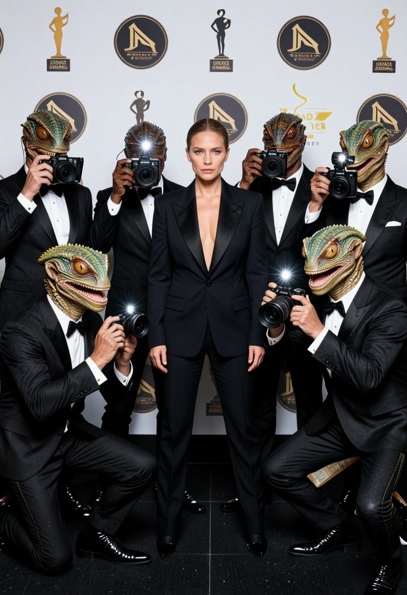
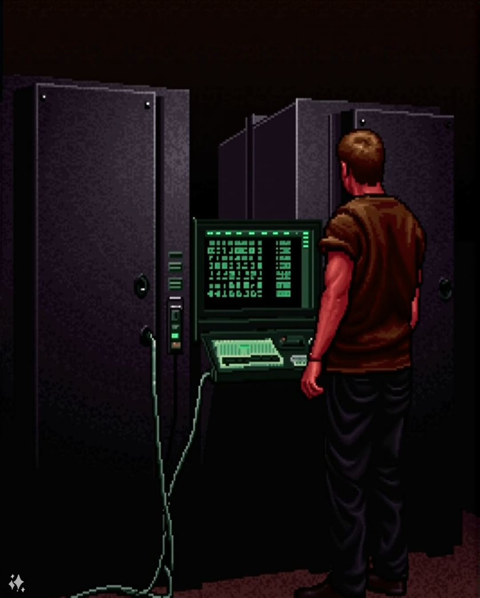
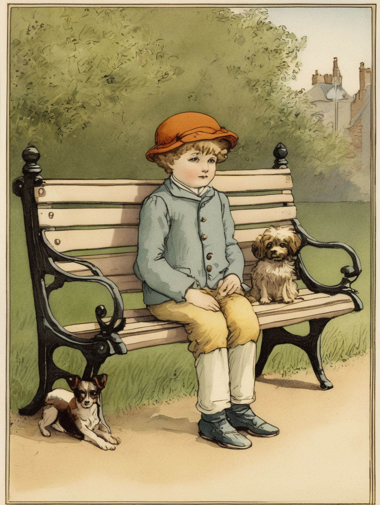
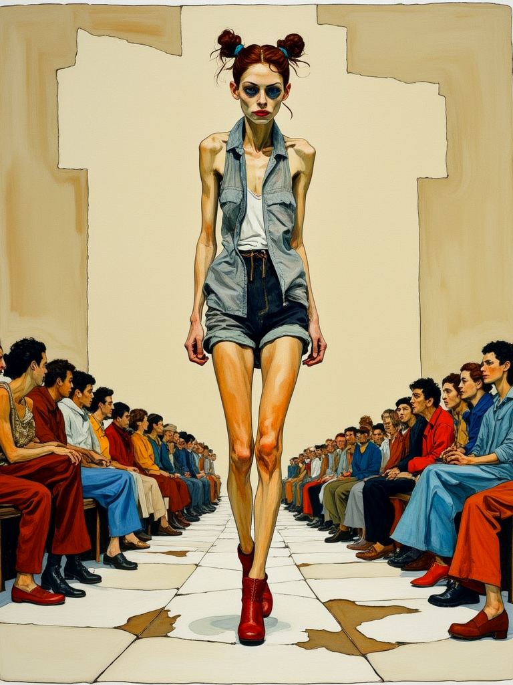

ALUMNO UTILIZA IA PARA CREAR IMÁGENES PORNOGRÁFICAS DE SUS COMPAÑERAS
Un estudiante de la Escuela Manuel Belgrano de Córdoba fue denunciado por generar imágenes pornográficas de sus compañeras utilizando inteligencia artificial.
Un estudiante de la Escuela Manuel Belgrano de Córdoba fue denunciado por generar imágenes pornográficas de sus compañeras utilizando inteligencia artificial.

La Chiqui liquidó a la empresaria afirmando que "hubo un acuerdo" para que ganara el Martín Fierro y se armó una grande.

El doxing existe desde 1990, pero la IA ha potenciado su alcance y riesgo

Los chats muestran ofrecimientos de dinero, pedidos de fotos y propuestas para sumar a otros menores
El humorista se suma al doblaje latino de la nueva película de Disney y Pixar después de un viaje a San Francisco que lo dejó sin palabras. Más detalles en la nota.

Decenas de blogs y foros en la web promueven las técnicas para una delgadez extrema como una “elección de vida”
La placa quedó definida tras una semana cargada de cambios dentro del reality de Telefe y las redes ya anticipan qué participante tendría más chances de abandonar el certamen.
Crearon un sistema que permite “conversar” con Silvina Luna por medio de inteligencia artificial.
Mengolini afirma que seguirá denunciando el acoso a los periodistas y defendiendo a otros “que piensan como nosotros”. Aquí, la periodista cuenta más sobre su demanda contra Milei.
La energía astral activa recuerdos, emociones pendientes y conexiones inesperadas. Enterate si tu signo podría revivir una historia que parecía cerrada.
El prompt “Grok, poné en bikini a esta chica” fue tendencia en X. La IA de Elon Musk elude la regulación estatal cínicamente.
A través de sus redes, la modelo y el empresario publicaron postales desde Europa, con selfies y paseos que reflejan cercanía. Mientras en LAM aseguran que retomaron el vínculo tras una etapa marcada por distancia
Se viraliza un spot de campaña... Pero la supuesta voz de Kicillof no coincide con el movimiento de sus labios. Además, los ojos, labios y dentadura del gobernador presentan inconsistencias.
Un joven compartió la experiencia paranormal que vivió junto a sus hermanas y su madre, cuando le pidieron al espíritu de su abuelo fallecido que se mostrara.
Una falsa llamada automatizada que se hace pasar por el presidente Biden está perturbando el proceso de las elecciones primarias de New Hampshire (EE UU), y nadie sabe quién está detrás.
Una imagen de una explosión en el Pentágono generada por inteligencia artificial causa una caída breve en la bolsa de Nueva York.
En plena emisión de su programa, la conductora se refirió otra vez a la polémica figura que le realizó un artista en su ciudad natal. “No soy yo”, aseguró
Una mujer fue a comer afuera con su novio y se sorprendió al ver lo que querían cobrarle; la situación se volvió viral y generó mucha bronca en las redes
Tim Payne, jugador de Wellington Phoenix, fue detenido en Sídney tras haberse fugado de la concentración en pleno aislamiento obligatorio.
Una mujer francesa fue engañada y les dio US$850.000 a estafadores que se hacían pasar por el actor Brad Pitt con la ayuda de inteligencia artificial.